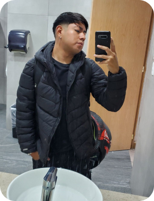
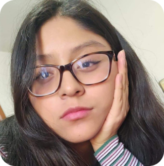

Creadores
Somos estudiantes de la Ingeniería en Telemática de la Unidad Profesional Interdisciplinaria en Ingeniería y Tecnologías Avanzadas (UPIITA) del Instituto Politécnico Nacional (IPN).
Este sitio web fue creado con el objetivo de dar a conocer más sobre nuestra carrera, ya que hemos notado que muchas personas no están familiarizadas con lo que realmente implica estudiar telemática. Queremos explicar de manera sencilla y clara en qué consiste nuestra formación, las áreas que abarca y el campo laboral que tiene un ingeniero en telemática.
Esperamos que este sitio no solo ayude a aquellos que quieran conocer más sobre nuestra disciplina, sino también a futuros estudiantes que estén interesados en explorar el fascinante mundo de las telecomunicaciones, las redes y las tecnologías de la información.
Alumno 1:
Mi nombre es Daniel Rodriguez, tengo 23 años y actualmente curso el décimo semestre de Ingeniería Telemática en la UPIITA. Elegí esta carrera porque siempre me ha apasionado el mundo de las redes y la programación. Me considero una persona activa, ya que me gusta entrenar tanto fútbol como boxeo, y también disfruto de la velocidad y las motocicletas. En mis tiempos libres, suelo relajarme jugando en mi Xbox One y escuchando música, especialmente corridos tumbados y reguetón. Además, mi color favorito es el azul, lo que refleja mi tranquilidad y optimismo.
Alumno 2:
Mi nombre es Erick Saúl Flores Juárez, tengo 22 años y soy estudiante de Ingeniería Telemática. Disfruto de expresarme a través de la poesía y encuentro en la lectura una fuente constante de inspiración. También soy aficionado al ciclismo y la jardinería, actividades que me conectan con la naturaleza y me brindan equilibrio. Además, soy dueño de una gata llamada Chikorita, quien me ha acompañado con cariño durante los últimos 9 años.
Alumna 3:
Mi nombre es Itzel López y soy estudiante de Ingeniería Telemática en la UPIITA. Además de mi pasión por la tecnología y las redes, tengo un gran interés en el deporte. Formo parte de la selección de tocho bandera de la escuela, donde disfruto de la disciplina, el trabajo en equipo y la competencia. Para mí, el balance entre el estudio y el deporte es fundamental, ya que me permite desarrollarme tanto en lo académico como en lo personal.
